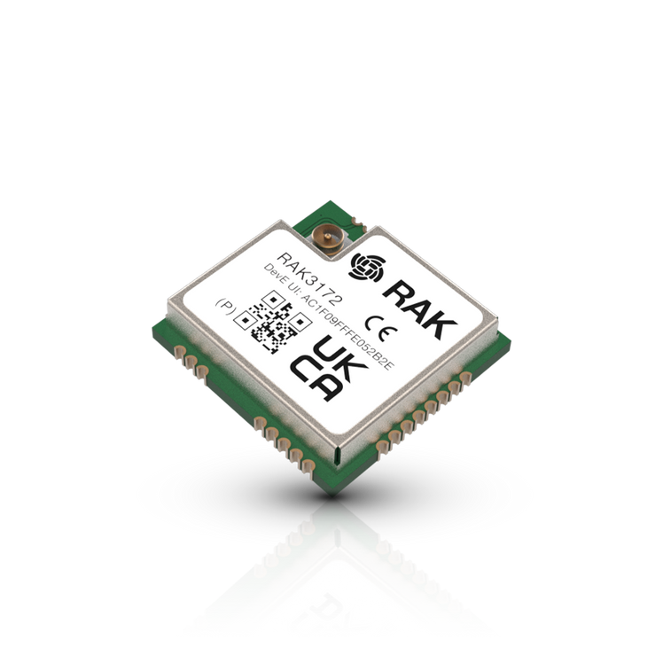
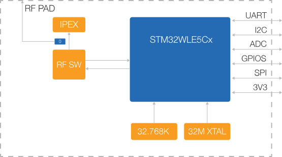
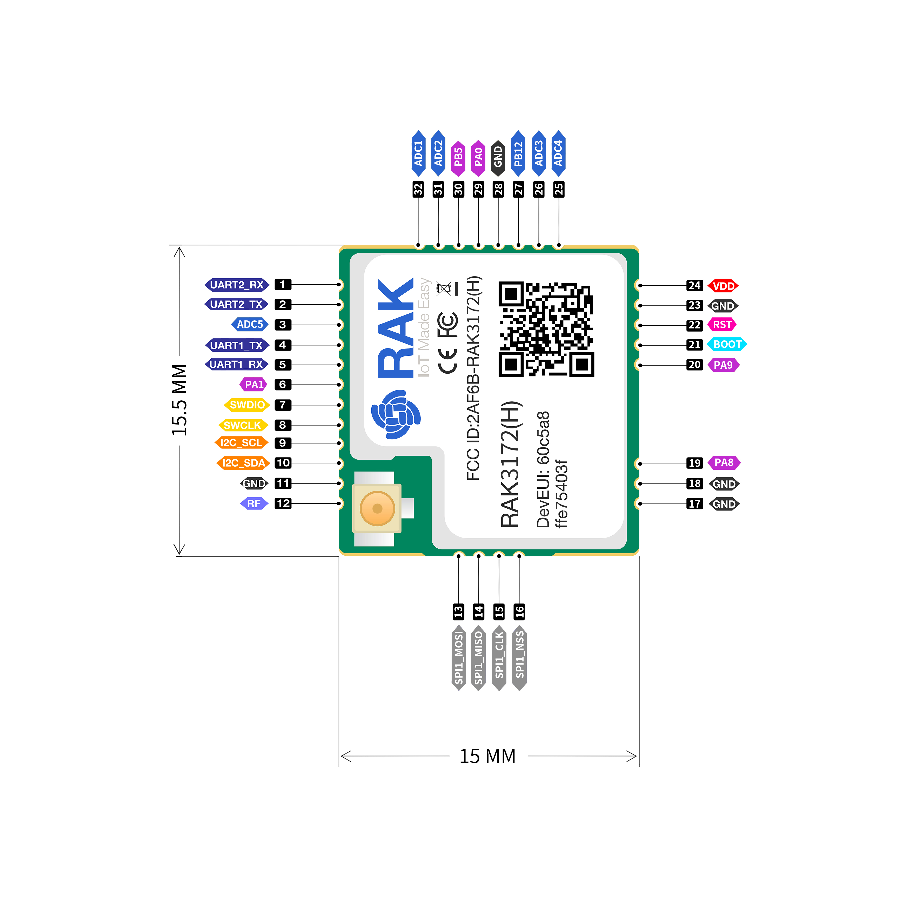
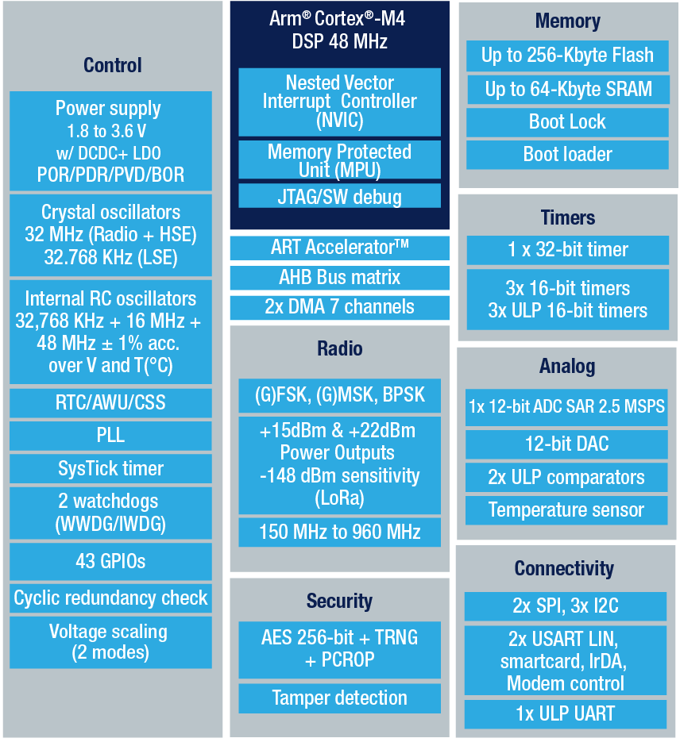
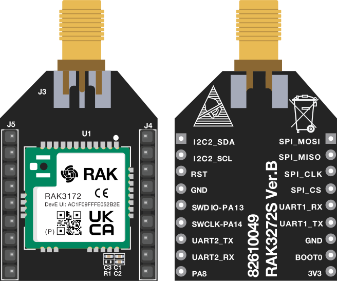
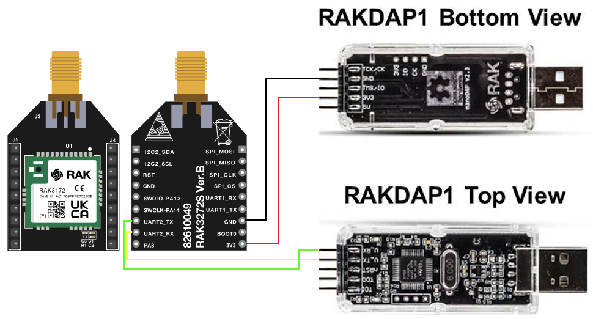
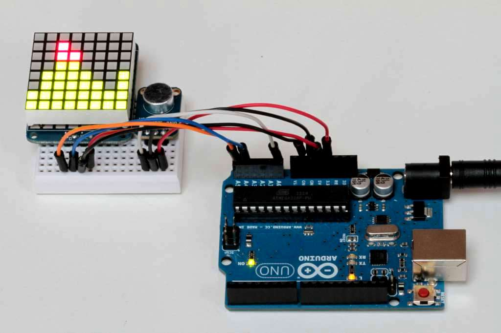
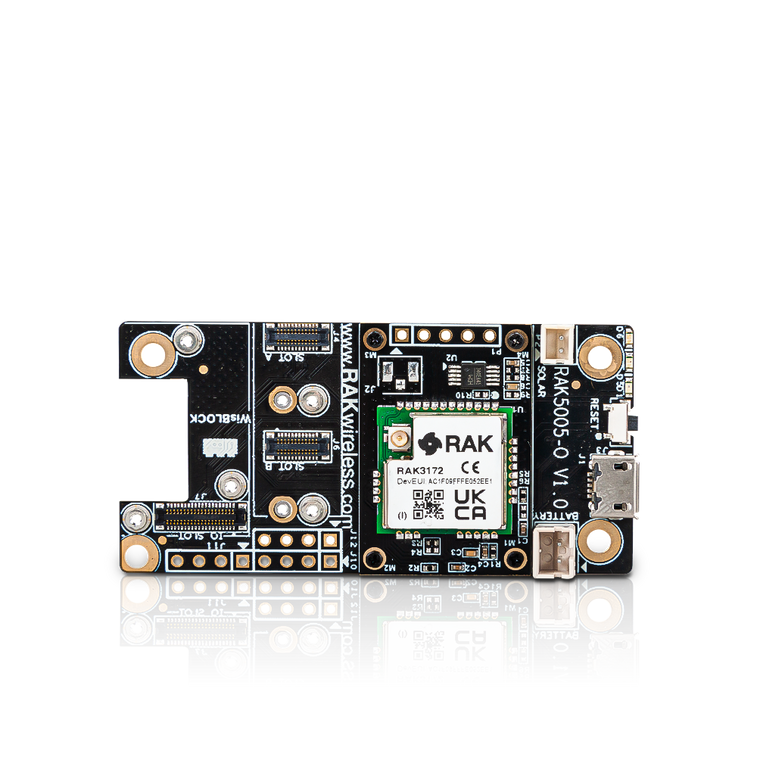
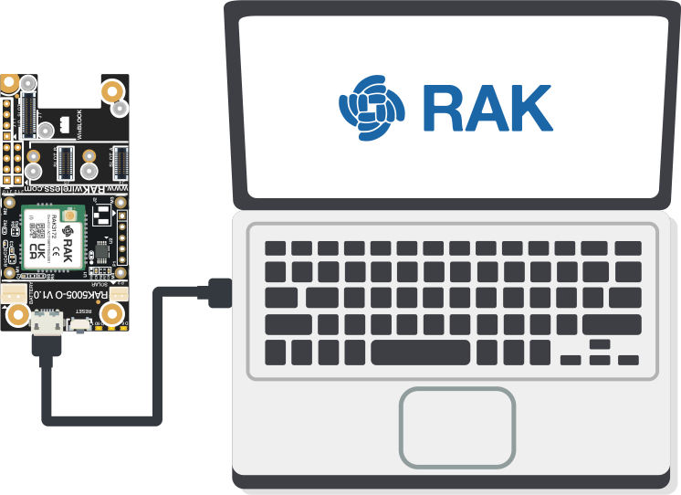

RAK3172
WisDuo RAK3172

产品概述
RAK3172模块集成了STM32WLE5CC MCU芯片，是一款低功耗、远距离、易用、小巧的无线数据应用LoRa®收发模块。该模块遵循LoRaWAN® 1.0.3协议，支持Class A、Class B、Class C三种工作模式，易于连接到不同的LoRaWAN服务器平台，如TTN、Chirpstack、Activity、腾讯云等等。该模块还支持LoRa® P2P（点对点）通信，可帮助用户快速实现自己的远距离LoRa®网络。
用户可通过UART接口使用AT命令来配置模式和控制模块工作。RAK3172特别适合需要低功耗、电池供电的各种应用。
产品特性
- 集成STM32WLE5CC芯片
- 遵循LoRaWAN® 1.0.3协议
- 支持的频段：EU433、CN470、IN865、EU868、AU915、US915、KR920、RU864、AS923-1/2/3/4
- LoRaWAN激活模式：OTAA、ABP
- 支持LoRa® P2P（点对点）通信
- 具有简单易用的AT命令功能
- 支持通过UART接口发送AT命令
- 使用优化过的天线，通信距离可超过15 km
- CPU核：ARM 32-bit Cortex-M4
- 内置带ECC的256 KB闪存
- 64 KB RAM
- 超低功耗，睡眠模式下功耗低至1.69 μA
- 温度范围：-40 °C ~ +85 °C
- 供电电压：2.0 V ~ 3.6 V
系统框图

引脚定义

STM32WLE5CC 架构

RAK3272S Breakout Board
RAK3272S Breakout Board是一款小巧易用的开源开发板，RAK3272S Breakout Board将RAK3172模块引脚转换成2.54 mm排针，非常易于开发和测试。
连接方式 仅需要杜邦线和串口板
使用开发板，杜邦线和面包板 来控制led灯

RAK3172 LPWAN开发板
连接方式仅需要一根usb线，底板还可以接各类wisblock传感器。
RAK3272 sip
RAK 第一个芯片 RAK3172 Sip

RAK61310 WisDuino 开发板
适配Arduino开发板

本博客所有文章除特别声明外，均采用 CC BY-NC-SA 4.0 许可协议。转载请注明来自 Stephen's blog！